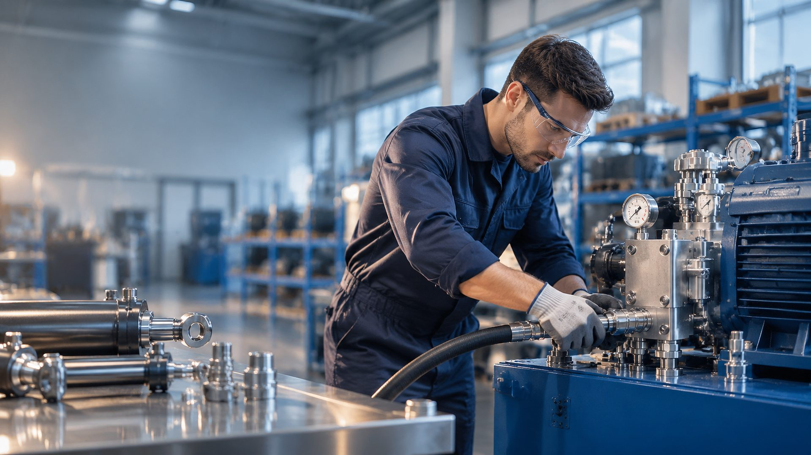
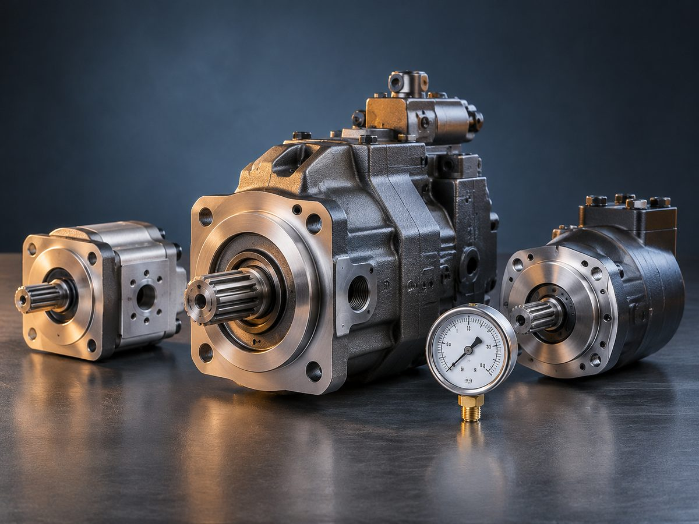

Négoce
Composants hydrauliques et mécaniques des grands constructeurs européens, disponibles en stock ou approvisionnés sur commande — avec le conseil technique qui va avec.

Composants européens, systèmes sur mesure, atelier de réparation : GT Maroc réunit sous un même toit le négoce, l’étude et le service hydraulique dont votre production a besoin.
De la pièce détachée au système complet, GT Maroc couvre l’ensemble du cycle de vie de vos équipements hydrauliques et mécaniques.
Composants hydrauliques et mécaniques des grands constructeurs européens, disponibles en stock ou approvisionnés sur commande — avec le conseil technique qui va avec.
Bureau d’études intégré : dimensionnement, schémas hydrauliques, systèmes électro-hydrauliques et équipements spéciaux conçus pour votre process.
Vérins hydrauliques et centrales assemblés dans notre atelier de Casablanca, selon votre cahier des charges, vos plans ou un modèle existant.
Diagnostic, réparation, montage, tuyauterie et raccordement sur site. Dépannage de centrales, de vérins et de composants, toutes marques.
Une sélection de références européennes, disponibles en stock ou approvisionnées selon vos spécifications techniques.
 Fabrication & réparation
Fabrication & réparation
Vérins standards ou sur plan, réparation avec remplacement des joints, guidages et tiges chromées.

Transmission de puissancePompes à pistons et à engrenages, moteurs hydrauliques, organes de transmission de puissance et pièces de rechange.
 Haute pression
Haute pression
Flexibles HP, embouts sertis, adaptateurs, tubes rigides et accessoires de branchement pour vos installations.
 Centrale hydraulique
Centrale hydraulique
Accumulateurs à vessie, filtres et cartouches, indicateurs de colmatage et accessoires de centrale.
 Mécanique
Mécanique
Courroies, poulies, chaînes, pignons, accouplements et réducteurs pour vos lignes de production.
 Sur mesure
Sur mesure
Centrales sur mesure, blocs manifold, distributeurs proportionnels et instrumentation de contrôle.

Cette proximité change tout : une pièce à identifier, un vérin à remettre en état, une centrale à concevoir — la même équipe suit le dossier de l’analyse à la mise en service.
Analyse de la panne, relevé des caractéristiques, proposition de la solution la plus économique entre réparation et remplacement.
Calculs de débit, de pression et de puissance, schémas hydrauliques, sélection des composants et plans d’implantation.
Assemblage des vérins et des centrales, montage des flexibles et raccords, essais en atelier avant livraison.
Installation sur site, raccordement, réglages et préconisations d’entretien pour fiabiliser vos équipements.
Cinq regards sur nos métiers : l’assemblage, la réparation, l’étude, le stock et l’intervention. Cliquez pour parcourir les images en grand.
Nos composants et nos interventions accompagnent les installations qui ne peuvent pas s’arrêter.
Être au plus près de vous, évoluer avec vous, être fort de propositions, nous placer dans une dynamique commune et faire de GT MAROC l’entreprise qui suit vos mouvements.
Envoyez-nous vos références, photos de plaque ou plans : notre équipe revient vers vous avec une solution technique et un devis.